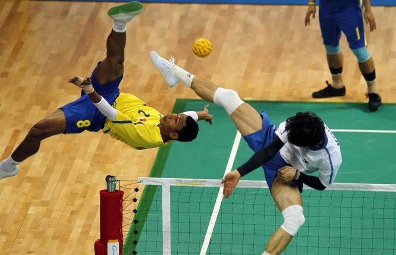
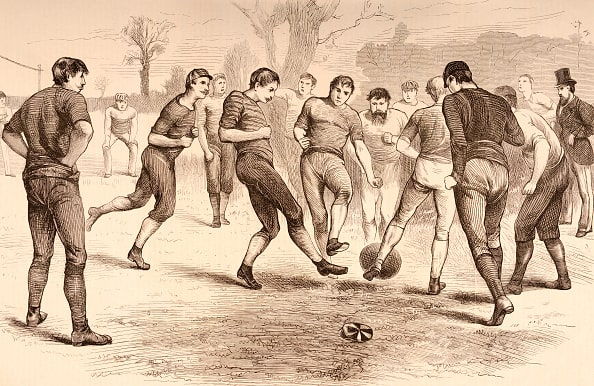
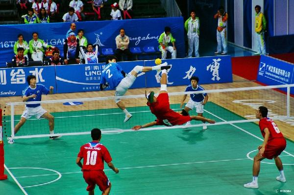
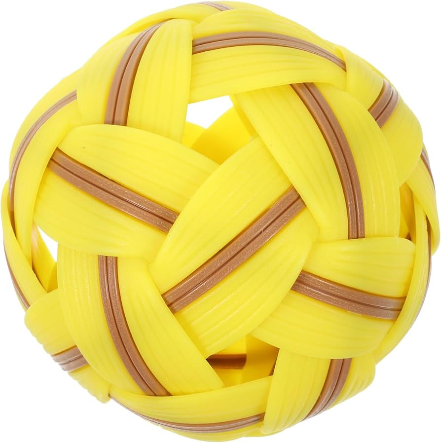
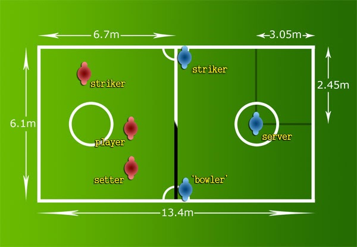
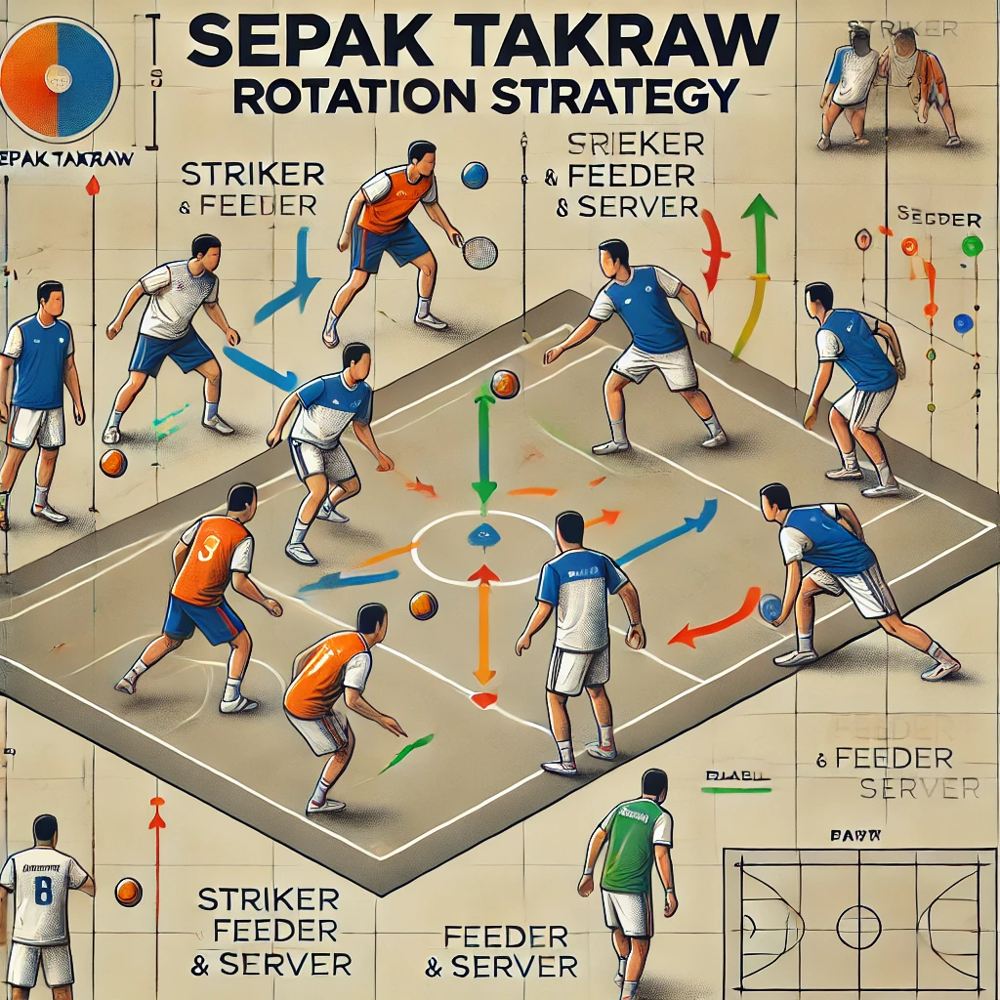

¿Qué es?
El Sepak Takraw es un deporte tradicional del sudeste asiático que combina elementos de fútbol, voleibol y gimnasia. Se juega en una cancha similar a la de voleibol, pero en lugar de usar las manos, los jugadores deben golpear un balón (tradicionalmente hecho de ratán, aunque ahora también de plástico sintético) únicamente con los pies, la cabeza, las rodillas o el pecho.
El Sepak Takraw es famoso por las acrobacias espectaculares que realizan los jugadores para rematar el balón, como las famosas "chilenas" o saltos invertidos. Es un deporte altamente dinámico, técnico y visualmente impresionante.
Historia
El Sepak es un deporte tradicional del sudeste asiático que combina fútbol, voleibol y movimientos acrobáticos. Tiene raíces en el siglo XV, particularmente en Malasia, donde era conocido como Sepak Raga, un juego en el que los jugadores formaban un círculo y mantenían el balón en el aire usando los pies. Con el tiempo, este deporte se extendió a países como Tailandia, Indonesia y Filipinas, evolucionando hacia una forma más estructurada.
En el siglo XX, Tailandia y Malasia formalizaron las reglas modernas del juego, incorporando una red similar a la de voleibol y un sistema de puntuación. Desde 1965, el Sepak Takraw ha sido parte de los Juegos del Sudeste Asiático, aumentando su popularidad en la región.
En 1988, se creó la International Sepaktakraw Federation (ISTAF), promoviendo el deporte a nivel internacional. Actualmente, el Sepak Takraw es apreciado por su espectacularidad y los movimientos acrobáticos de los jugadores, siendo practicado en competiciones de alto nivel, especialmente en Asia.
Reglas
Equipo y jugadores
Cada equipo conocido como "regu", tiene 3 jugadores en la cancha.
Roles principales:
Tekong (servidor).
Feeder (prepara el balón).
Striker (rematador).

Balón
En esta imagen podemos observar el balón que se emplea en dicho deporte poseé una forma similar a un balón de futbol, pero su interior se encuentra vacío, ya que tradicionalmente esta hecho de ratán o de plástico sintético (con un tamaño de 42-44 cm de circunferencia), además de que es mucho más pequeño que una pelota de futbol sala, lo cual hace que este deporte sea más complejo y mucho más impresionate de ver en directo o por televisión.

Campo
Sus dimensiones son similares a las del campo de bádminton de las mujeres, con una red de alturade 1.55 m para hombresy 1.45 m para mujeres.
El partido comienza cuando se realiza un saque inicial desde dentro del círculo de servicio.
El Tekong debe golpear el balón con un pie mientras el otro pie está dentro del círculo.
Puntuación y Golpes permitidos
🏐 Se utiliza el sistema de rally point (cada jugada suma puntos).
🏐 Gana el set el equipo que alcance 21 puntos con al menos 2 de diferencia.
🏐 El partido es al mejor de 3 sets.
🏐 Cada equipo puede realizar hasta 3 toques para devolver el balón.
🏐 Solo se permite usar los pies, cabeza, rodillas, pecho y hombros.
🏐 Las manos y los brazos están prohibidos.
Faltas
❗El balón no pasa la red o sale fuera de los límites.❗
❗El jugador toca la red o cruza la línea central del campo.❗
❗Si excede el número de toques permitidos.❗
Rotación
Aunque los roles están definidos, los equipos rotan posiciones al finalizar cada set.
En esta imagen podemos observar desde un punto de vista alternativo como sería la rotación de cada jugador dentro del campo.
Tipos de rotación
🤸♂️ Rotación ofensiva.
🤸♀️ Rotación defensiva.
🤸♂️ Rotación equlibrada.
🤸♀️ Rotación situacional.
🤸♂️ Rotación inversa.
Entrenamiento
Técnicas y jugadas
Saques
Saque Normal: Se realiza desde el área de saque (ubicada en los bordes de la cancha) y consiste en lanzar la pelota por encima de la red con el pie.
Saque especial: También llamado "Bomba" o "Smash", es un saque poderoso que busca sorprender al equipo contrario.
Bloqueos: El equipo defensor usa saltos y movimientos para interceptar el balón antes de que cruce la red.
Competiciones
El Sepak Takraw es popular en Asia y cuenta con varios torneos internacionales:
- Juegos del Sudeste Asiático (SEA Games).
- Campeonatos Asiáticos.
- Copa del Mundo de Sepak Takraw.
- Juegos Asiáticos (Asian Games).
Además, la ISTAF organiza eventos mundiales para promover el deporte globalmente.